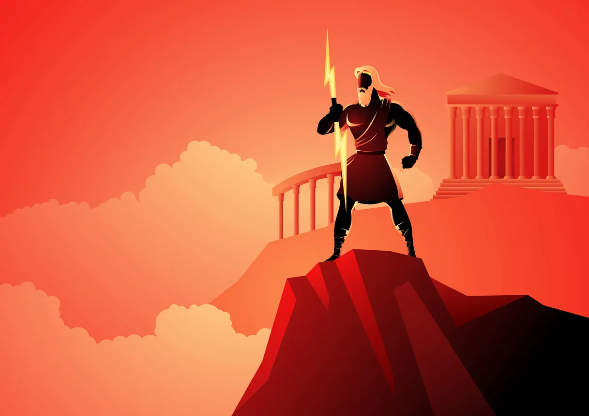
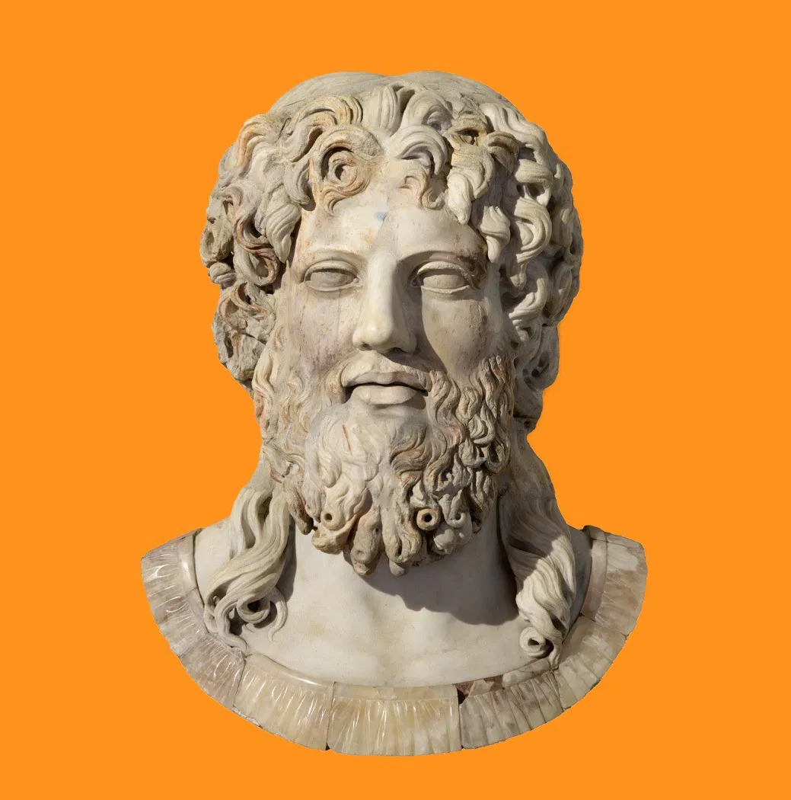

Zeus
Además de ser el Dios del Rayo, Zeus también es padre supremo de todas las deidades y los mortales que habitan la tierra. Es originario de la isla de Creta, donde al nacer fue rescatado de las fauces de su padre, Cronos.
De no haber sido por la oportuna intervención de Rea (su madre), Zeus habría sido devorado por su progenitor, al igual que el resto de sus hermanos.
Rea escondió y crió a Zeus hasta que este se convirtió en el máximo referente de los Dioses griegos. Sin embargo, hay que tener en cuenta que a pesar de ser el principal dios griego, estaba mucho más humanizado que el Dios judeocristiano, e incluso fue descrito como un oportunista y una entidad dada al engaño (sobre todo adoptando la forma de otros seres).
